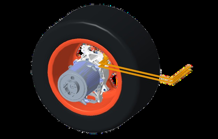
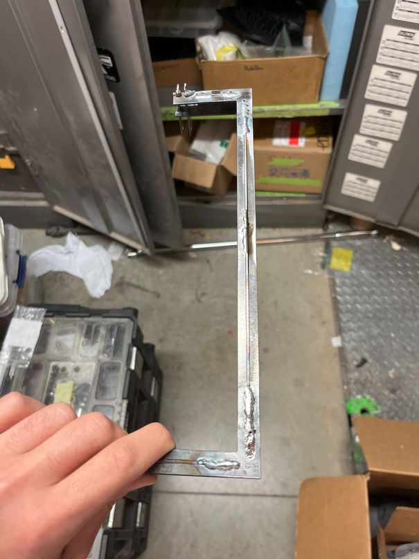

Suspension Tire Temp Sensor Mount
Designed a crash-safe mount for the IRN8C tire temperature sensor, engineered to prevent fracture and part collision during a frontal impact.



What
- Designed a tire temperature sensor mount for the IRN8C sensor.
- Mount had to be strategically shaped to prevent fracture in a frontal collision.
How
- Modeled the part in Creo Parametric; manufactured from 1/16" sheet metal.
- Built a kinematic model to verify clearance and prevent collision with other suspension parts.
Results
- Design fulfilled its purpose and was used during vehicle testing sessions.
- Prevented sensor damage across driving sessions.